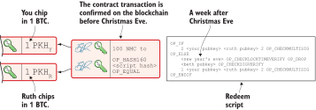

Transactions revisited
This chapter covers
-
Time-locking bitcoins
-
Swapping coins between blockchains
-
Attaching arbitrary data to transactions
-
Bumping the fee of a pending transaction
We’re now past the core chapters of the book, in which you learned the Bitcoin basics. In this chapter, we’ll dig deeper into the functionality transactions can offer.
We’ll start by exploring time locks. A time lock is a way to make a transaction invalid until some point in time. This means the transaction can’t be confirmed before that time constraint is met. Also, an output of a transaction can be programmed to prevent it from being spent until a time constraint is fulfilled. This is useful for digital contracts, such as atomic swaps, covered later in this chapter.
It’s sometimes useful to store a small amount of data in a transaction in the blockchain. For example, a car manufacturer might want to track ownership of a car by putting its chassis number into a Bitcoin transaction, effectively creating a token on the Bitcoin blockchain. The current owner can then transfer ownership of the car by sending that token to the new owner.
As mentioned in [altcoins], several alternative cryptocurrencies are available. Sometimes, you might want to trade, for example, namecoins for bitcoins. The most obvious way to do this is to use an exchange to sell bitcoins and buy namecoins. But there are other, more decentralized ways to do it. Atomic swaps let you swap bitcoins directly with someone holding namecoins without a trusted third party, like an exchange.
If you pay a too-small transaction fee, miners might refuse to confirm the transaction within a reasonable time. In this situation, it can be helpful to replace the transaction with another one that pays a little more in fees. This is known as fee-bumping.
Finally, we’ll explore some intricate details of signatures. You can create signatures in different ways depending on your use case. You can tune what the signature should commit to: in other words, change how the signing algorithm hashes the transaction.
Time-locked transactions
When you create and sign a transaction, it’s valid and ready for inclusion in any future block. You can broadcast it immediately and have it mined. This is the normal case.
But in some cases, you may want to sign a transaction with a guarantee that it won’t be mined until after at least, say, one year has passed.
Suppose you have 100 bitcoins, and you want your daughter to inherit the money to her address @D, but only after you die. You can create a transaction that’s time-locked (A payment to your daughter that will become valid on 30 April 2019).
What makes this transaction special are the inputs’ sequence numbers and
the transaction lock time. I briefly mentioned sequence numbers in
[ch05]. They’re used to enable the lock time: if any input has a
sequence number less than ffffffff—for example, fffffffe—the lock
time set on the transaction will be effective. If all sequence numbers
are ffffffff, the lock time won’t have any effect.
You give this transaction, Tx1, to your daughter. It’s currently invalid; your daughter stores it on her computer and prints a backup that she keeps in another place. It isn’t broadcast; no full node will accept a block containing this transaction yet. The transaction will become valid the morning of 30 April 2019. If you die before that, your daughter must wait until after the lock-time date and then claim the money by broadcasting the transaction, which will have become valid by then.
If you don’t die before that date, you want to make sure the time-locked transaction becomes useless so your daughter can’t take the money once the date has passed.
You can create, but not yet broadcast, a new transaction, Tx2, that double spends an output that Tx1 spends (Make Tx1 invalid by spending an output that Tx1 spends, and create a new time-locked transaction for your daughter.). You then create a new transaction, time-locked for yet another year, for your daugher. When she’s stored the transaction safely, you broadcast Tx2.
You need to
-
Create and sign a transaction, Tx2, that spends at least one of the outputs spent by Tx1. Tx2 is a normal, not time-locked, transaction. Don’t broadcast this transaction just yet.
-
Create a new time-locked transaction, Tx3, that spends all your outputs as if Tx2 was confirmed. Tx3 is locked for another year.
Give it to your daughter. -
Broadcast Tx2. Once Tx2 is mined, Tx1 will become forever invalid because one of the inputs of Tx1 is spent by Tx2.
Note how the order of events is important here. If Tx2 is broadcast before you give Tx3 to your daughter, there’s a chance you’ll die before giving her Tx3. Then, your daughter won’t be able to receive the funds because she has no valid transaction to claim them with. Tx1 is invalidated by Tx2 in the blockchain, and Tx3 isn’t in your daughter’s possession.
Time measurements
You can express a lock time in two ways. The first is by setting a date and time as in the previous example. The second is to set a block height.
Block time
The first example expressed the lock time as a date and time. This means the median time past must be greater than the lock time in the transaction. In [ch07], I noted that a block’s timestamp must be greater than the past 11 blocks’ median timestamp, or the median time past of the block. We use the median time past to decide whether a transaction is valid as regards the lock time. Suppose you died on 24 January 2019. Your mourning daughter wouldn’t be able to claim your money until 30 April 2019. Your daughter can claim your money after the median time past is earlier than your lock time. illustrates this more precisely.
Your daughter’s transaction can’t be mined in any block before the last one shown. Before that block, the median time past is too early.
Her transaction won’t even propagate through the Bitcoin network until the lock time has passed. The nodes don’t want to keep time-locked transactions in their memories because there are better uses for their precious memory space than to fill them up with transactions that aren’t even valid (yet). It’s up to your daughter to broadcast the transaction after the lock time has passed.
Block height
You can also express time using block height. You can say that a transaction isn’t valid, for example, until after block height 571019. This means the transaction shown in A time-locked transaction based on block height. This transaction is first valid at block height 571020. can’t be mined until after block 571019 has been mined.
The earliest block in which the transaction can be included is at height 571020. It’s hard to predict exactly when that block will be mined, but thanks to the difficulty adjustments that keep the average block time at about 10 minutes, you can expect about 52,596 blocks per year.
Relative time locks
The earlier example showed a use case for absolute time locks on transactions. But you can also lock an input of a transaction until its spent output is old enough. This is called a relative time lock. You do this on a per-input basis (Relative time locks can be expressed either as a number of blocks or as a number of time units. You use the inputs’ sequence numbers for this.).
The transaction’s first input has a sequence number of 004013c6. This
says the transaction isn’t valid until 30 days have passed since the
spent output was confirmed (The first input locks the transaction for 30 days from the spent output.).
The leftmost bit of this sequence number is 0, which means the relative
lock time is enabled. The bit at index 9 from the left is 1, which means
the rightmost 16 bits should be interpreted as “number of 512-second
intervals.” The 16 rightmost bits are 13c6, which translates to 5,062
in decimal form; 5,062 intervals of 512 seconds is roughly 30 days.
The second input has a sequence number of 000003e8 (The second input locks the transaction for 1,000 blocks from the spent output.). This
means the transaction is invalid until 1,000 blocks have been mined
since the spent output was mined.
The leftmost bit is 0 here, too, which means the relative lock time is
enabled for this input. The bit at index 9 from the left is 0, which
means the 16 rightmost bits should be interpreted as the number of
blocks; 03e8 is hex code for 1,000.
The transaction’s version needs to be at least 2 for relative time locks to work. If the version is 1, the sequence numbers won’t have any effect on the relative lock time, but they will affect absolute lock time and the replace-by-fee feature, which I’ll discuss later in Replacing pending transactions.
Time-locked outputs
Time locks aren’t particularly useful in themselves. The only thing you can do with them is create a transaction that might eventually become valid.
It might be more useful to say something like, “The money in this output can’t be spent before New Year’s Eve.” This is an example of a time-locked output. An output can be locked absolutely or relatively, and locks can be time-based or height-based.
Absolute time-locked outputs
Suppose you want to give your daughter 1 BTC in allowance on 1 May. You can make a transaction as Paying allowance in advance to your daughter. She may not spend it before 1 May. shows.
You can broadcast this transaction immediately to the Bitcoin network and have it mined. The first output is the interesting part. It says that this output can’t be spent before 1 May. For the curious, the exact pubkey script is
<may 1 2019 00:00:00> OP_CHECKLOCKTIMEVERIFY OP_DROP OP_DUP OP_HASH160 <PKHD> OP_EQUALVERIFY OP_CHECKSIG
This script will make sure the transaction spending the output is sufficiently time-locked, as Various spending transactions and their validity shows.
The first two transactions will never be valid because their time locks aren’t sufficiently late. The first one isn’t locked, which is illegal according to the pubkey script. The second one is at least time-locked, but it isn’t late enough—1 second before 1 May is too early.
The third transaction is OK because the time lock is at least as high as the time in the pubkey script, 2019-05-01 00:00:00. This transaction will be valid on and after 1 May. The last transaction will be valid on New Year’s Eve, right before the fireworks. Note, however, that you can’t get both of the last two transactions confirmed—you can get at most one of them confirmed—because they spend the same output.
The result of this example is that your daughter will be able to spend the output as she pleases after 1 May.
Relative time-locked outputs
A relative time-locked output works similarly to an absolute time-locked output, but relative locks require a certain amount of time to pass between the block containing the spent output and the block containing the spending transaction (Spending a relative time-locked output is allowed after a certain number of blocks have passed.).
Relative time locks are most commonly used in digital contracts. A digital contract can be regarded as a traditional contract between parties, but it’s enforced by the rules of the Bitcoin network rather than national laws. Contracts are expressed as Bitcoin pubkey scripts. We’ll illustrate the use of relative time-locked outputs with an atomic swap in the next subsection. An atomic swap means two people swap coins with each other across different cryptocurrencies.
Atomic swaps
A commonly mentioned digital contract is the atomic swap, where two parties want to swap coins with each other between different blockchains.
Suppose John is chatting with Fadime on a public forum on the internet. They don’t know each other and have no reason to trust one another. But they both want to trade.
They agree that John will trade 2 BTC for 100 of Fadime’s namecoins (NMC). Namecoin is an alt-coin used as a decentralized naming system, like DNS. We talked briefly about alt-coins in [ch01]. It isn’t important what Namecoin actually is used for in this example; we only conclude that it’s another cryptocurrency on a blockchain other than Bitcoin’s.
The conversation between John and Fadime starts as follows:
John: Do you want to swap 100 NMC for my 2 BTC? My Namecoin public
key is 02381efd…88ca7f23. I’ve created a secret random number that has
the SHA256 hash value H. I will not tell you the secret number yet.
Fadime: Sure John, let’s do it! My Bitcoin public key is
02b0c907…df854ee8.
We’ll call the secret number S. Only John knows S for now, but he shares the hash of S—which is H—with Fadime. Now, they both have enough information to get started.
They create one transaction each (John and Fadime create a contract transaction each. The redeem script of the p2sh output contains the contract details.). John creates a Bitcoin transaction that spends 2 BTC. Fadime creates a Namecoin transaction that spends 100 NMC. They don’t broadcast their transactions yet.
The output of John’s contract transaction can be spent in one of two ways:
-
By providing the pre-image of H and Fadime’s signature. John knows this pre-image—his secret number S from the conversation described earlier—but Fadime doesn’t.
-
With John’s signature after 48 hours.
Likewise, the output of Fadime’s contract transaction can be spent in one of two ways:
-
By providing the pre-image of H and John’s signature
-
With Fadime’s signature after 24 hours
The relative lock time is enforced by the script operator
OP_CHECKSEQUENCEVERIFY. This operator ensures that the output of
John’s contract transaction can’t be spent by John until 48 hours have
passed since the contract transaction was confirmed. In Fadime’s
contract transaction, the operator ensures that Fadime doesn’t spend
the output until after 24 hours.
Fadime knows John has the secret number. If Fadime broadcasts her contract transaction now, John can take the money and not fulfill his part of the deal. For this reason, she won’t broadcast her transaction until she’s seen John’s transaction safely confirmed in the blockchain. Because Fadime doesn’t know the secret, S, John can safely broadcast his contract transaction without Fadime running away with the money.
John broadcasts his contract transaction. Remember that the output of the contract transaction in this example is a pay-to-script-hash (p2sh) output. The output contains a p2sh address that doesn’t say anything about this being John’s contract output. For Fadime to identify John’s contract transaction on the Bitcoin blockchain, she’ll construct the same redeem script as John created for his contract transaction and generate the p2sh address that John’s contract transaction paid to. She can then look for that p2sh address in the Bitcoin blockchain.
When Fadime finds that John’s transaction is confirmed, she broadcasts her own contract transaction. John waits until Fadime’s transaction is sufficiently confirmed on the Namecoin blockchain. Then, the actual swap happens in two steps. The first step of the actual swap. John claims Fadime’s 100 NMC by revealing the secret S. shows the first step.
John broadcasts his swap transaction. John’s swap transaction spends Fadime’s contract transaction output by providing S and his signature. Again, note that John is spending a p2sh output. This means the first thing that happens during script validation is that the redeem script John provided in the signature script will be hashed and compared to the hash in the pubkey script. The actual redeem script will then be run.
We won’t go through the program in detail. But when the redeem script
starts running, the stack will have 1 on top. This means true in
Namecoin, just as in Bitcoin. This value will cause the program to run
the part of the script that requires a pre-image and John’s signature.
The other part isn’t run at all.
The script will leave the stack with a true on top because John
provides both required items in the correct order—his signature and the
pre-image, S. He successfully claims his 100 NMC.
As soon as Fadime sees John’s swap transaction on the Namecoin network, she can create her own swap transaction for the Bitcoin blockchain (Fadime completes the atomic swap by sending her swap transaction to the Bitcoin network.).
She takes the pre-image, S, from John’s swap transaction and puts it
into her own swap transaction, which pays 2 BTC to Fadime’s public key
hash, PKHF. When the two swap transactions are confirmed, the atomic
swap is complete. The effect of all this is that John has sent 2 BTC to
Fadime under the condition that Fadime sends 100 NMC to him, and Fadime
sends 100 NMC to John under the condition that John sends
2 BTC to her.
Atomic swap failure
The sequence of events in this atomic swap example illustrates a case in which both parties, John and Fadime, play by the rules. No one had to actually use the time-locked branches of the contract transaction outputs. This subsection will go through some ways the swap might fail:
- Fadime doesn’t broadcast her contract transaction.
-
This means John can’t spend the output of Fadime’s contract transaction, which means Fadime will never get to see S. Without S, she can’t spend John’s contract output. The only possible outcome is that John must wait 48 hours for the relative time lock to pass and then reclaim his money.
- John doesn’t spend Fadime’s contract output in 24 hours.
-
Fadime can reclaim her coins, and John must wait another 24 hours before claiming his coins back.
- John spends Fadime’s contract output just after 24 hours has passed but before Fadime claims back her coins.
-
Fortunately, John’s contract output has a 48-hour relative lock time as opposed to the 24 hours in Fadime’s contract output, so John can’t claim his coins back until he’s waited another 24 hours. During this time, Fadime can claim her BTC from John’s contract output using S and her signature.
- Fadime gets hit by a bus just after broadcasting her contract output.
-
This is no good. John will be able to take his NMC from Fadime’s contract output and then wait 48 hours to also claim back his BTC. Fadime loses out on this one.
In the final case, we could argue that the swap wasn’t atomic. After all, it didn’t go through, and John ended up with all the coins. This is a somewhat philosophical question. But we can think of swaps as being atomic under the condition that Fadime can take action. We don’t have this condition for John, though. It’s a matter of who creates the secret, S.
Storing stuff in the Bitcoin blockchain
In the early days of Bitcoin, it became clear that people wanted to put stuff in transactions in the Bitcoin blockchain that didn’t have anything to do with Bitcoin itself: for example, A tribute in a transaction, which is a blockchain tribute to cryptographer Sassama, allegedly posted by Dan Kaminsky. (The message is wrapped into three columns here to save space.)
---BEGIN TRIBUTE--- LEN "rabbi" SASSAMA P.S. My apologies,
#./BitLen 1980-2011 BitCoin people. He
::::::::::::::::::: Len was our friend. also would have
:::::::.::.::.:.::: A brilliant mind, LOL'd at BitCoin's
:.: :.' ' ' ' ' : : a kind soul, and new dependency upon
:.:'' ,,xiW,"4x, '' a devious schemer; ASCII BERNANKE
: ,dWWWXXXXi,4WX, husband to Meredith :'::.:::::.:::.::.:
' dWWWXXX7" `X, brother to Calvin, : :.: ' ' ' ' : :':
lWWWXX7 __ _ X son to Jim and :.: _.__ '.:
:WWWXX7 ,xXX7' "^^X Dana Hartshorn, : _,^" "^x, :
lWWWX7, _.+,, _.+., coauthor and ' x7' `4,
:WWW7,. `^"-" ,^-' cofounder and XX7 4XX
WW",X: X, Shmoo and so much XX XX
"7^^Xl. _(_x7' more. We dedicate Xl ,xxx, ,xxx,XX
l ( :X: __ _ this silly hack to ( ' _,+o, | ,o+,"
`. " XX ,xxWWWWX7 Len, who would have 4 "-^' X "^-'" 7
)X- "" 4X" .___. found it absolutely l, ( )) ,X
,W X :Xi _,,_ hilarious. :Xx,_ ,xXXXxx,_,XX
WW X 4XiyXWWXd --Dan Kaminsky, 4XXiX'-___-`XXXX'
"" ,, 4XWWWWXX Travis Goodspeed 4XXi,_ _iXX7'
, R7X, "^447^ , `4XXXXXXXXX^ _,
R, "4RXk, _, , Xx, ""^^^XX7,xX
TWk "4RXXi, X',x W,"4WWx,_ _,XxWWX7'
lTWk, "4RRR7' 4 XH Xwi, "4WW7""4WW7',W
:lWWWk, ^" `4 TXXWw, ^7 Xk 47 ,WH
::TTXWWi,_ Xll :.. :TXXXWw,_ "), ,wWT:
=-=-=-=-=-=-=-=-=-= ::TTXXWWW lXl WWT:
----END TRIBUTE----
Although this was certainly interesting and funny, it had some implications for Bitcoin’s full nodes.
The message in A tribute in a transaction was written into the blockchain using a single transaction with txid
930a2114cdaa86e1fac46d15c74e81c09eee1d4150ff9d48e76cb0697d8e1d72
The author created a transaction with 78 outputs, one for each 20-character line in the message. Each line ends with a space, so only 19 characters are visible.
For example, the last output’s pubkey script looks like this:
OP_DUP OP_HASH160 2d2d2d2d454e4420545249425554452d2d2d2d20 OP_EQUALVERIFY OP_CHECKSIG
The interesting part is the PKH. This isn’t an actual PKH, but a made-up
one. Maybe you can see a pattern when you compare it to the line
“----END TRIBUTE---- ”:
2d 2d 2d 2d 45 4e 44 20 54 52 49 42 55 54 45 2d 2d 2d 2d 20 - - - - E N D T R I B U T E - - - -
This “public key hash” encodes one 20-character line in the
message. It uses the ASCII table to encode characters. For example,
the character - is encoded as the byte 2d. The characters A–Z are
encoded by the bytes 41–5a, and a space is encoded as byte 20.
Let’s look at the PKHs of the message’s last 10 lines along with the ASCII-decoded text:
20203458586958272d5f5f5f2d60585858582720 4XXiX'-___-`XXXX' 202020345858692c5f2020205f69585837272020 4XXi,_ _iXX7' 20202c2060345858585858585858585e205f2c20 , `4XXXXXXXXX^ _, 202058782c202022225e5e5e5858372c78582020 Xx, ""^^^XX7,xX 572c22345757782c5f205f2c5878575758372720 W,"4WWx,_ _,XxWWX7' 5877692c202234575737222234575737272c5720 Xwi, "4WW7""4WW7',W 54585857772c205e3720586b203437202c574820 TXXWw, ^7 Xk 47 ,WH 3a5458585857772c5f2022292c202c7757543a20 :TXXXWw,_ "), ,wWT: 3a3a54545858575757206c586c205757543a2020 ::TTXXWWW lXl WWT: 2d2d2d2d454e4420545249425554452d2d2d2d20 ----END TRIBUTE----
Bloated UTXO set
Because these PKHs are made up, they have no known pre-images. This also
means no known public/private key pairs are associated with them, so no
one can ever spend the outputs. They’re unspendable. The last PKH’s
Bitcoin address is 157sXYpj…QnHB6FGU. Anyone who pays money to this
address is throwing that money in the trash. The money is lost forever.
It’s the equivalent of burning a dollar bill.
Unspendable outputs like these are indistinguishable from ordinary, spendable outputs. You can’t prove that they’re unspendable. Full nodes have to treat them as spendable, meaning they have to keep these unspendable outputs in their unspent transaction output (UTXO) set forever. This places an unnecessary burden on nodes, which need to keep all these outputs in memory.
Bitcoin’s developers came up with a partial solution to this problem.
Instead of sending money to unprovably unspendable outputs, users can
create provably unspendable outputs. If a full node can determine if
an output is unspendable,
it doesn’t have to insert that output into its UTXO set.
The partial solution involves a new script operator called OP_RETURN.
This operator immediately fails when executed. A typical OP_RETURN
pubkey script can look like this:
OP_RETURN "I'm Grokking Bitcoin"
If someone tried to spend this output, the script would fail once it
encountered the OP_RETURN. If the pubkey script contains this
operator, a full node can determine that the output isn’t spendable and
ignore it, saving the UTXO set from being forever bloated with this
nonsense. A typical OP_RETURN output pays 0 BTC, but it can also set a
value greater than 0 to “burn” money.
There are a few policies regarding OP_RETURN:
-
The full pubkey script must not be bigger than 83 bytes.
-
There can be only one
OP_RETURNoutput per transaction.
These two policies are just that—policies. Full nodes adhering to these policies won’t relay transactions that violate them. But if they encounter a block that contains transactions that violate the policies, the block will be accepted and relayed. I’ll talk more about policies and consensus rules, strict rules that apply to blocks, in [ch10] and [ch11].
Creating a token in Bitcoin
I talked briefly about tracking ownership on the blockchain in [ch01]. Suppose a car manufacturer, let’s call it Ampere, decides that it wants to digitally track the ownership of its cars on the Bitcoin blockchain. This can be accomplished by creating a token in Bitcoin.
Suppose Ampere wants to create a token for a newly manufactured car with chassis number 123456. It broadcasts a Bitcoin transaction as shown in Ampere creates a new token for a newly built car. It issues the token to itself because it still owns this car..
This “Ampere token protocol” specifies that a new token is created when
-
Ampere spends a coin from PKHA.
-
The transaction contains an
OP_RETURNoutput with the text"ampere <chassis number>". -
The first output is the initial token owner.
Ampere has a well-known web page at https://www.ampere.example.com, where it has published its public key corresponding to PKHA. It also pumps out its public key through advertisements and via Facebook and Twitter. It does all this so people can verify that PKHA actually belongs to Ampere.
Suppose Ampere sells this car to a car dealer. The dealer has a public key hash, PKHD. Ampere sells the car to a car dealer with public key hash PKHD. shows how Ampere will transfer digital ownership to the dealer.
According to our simple protocol, car ownership is transferred by spending the old owner’s output. The following rules apply:
-
The spending transaction spends the old owner’s output.
-
The first output of the spending transaction is the new owner of the car.
The car dealer is now the new owner because PKHD is the first output of the spending transaction. That’s it. When the dealer sells this car to a consumer, Fadime, it transfers the car’s ownership to Fadime’s address, PKHF (The car dealer transfers the car’s ownership to Fadime’s PKHF.).
Starting the car with proof of ownership
Now that Fadime is the rightful owner of this car, wouldn’t it be cool if she could start it by proving she’s the owner? She can. The car is equipped with an ignition lock that starts the engine when Fadime sends a proof of ownership to the car (Fadime starts her car by signing a challenge with her private key.).
Fadime first asks the car to start. The car won’t start if it doesn’t know that Fadime has the private key belonging to PKHF. The car generates a big random number and sends it to Fadime, who signs this random number with the private key and sends the signature and her public key to the car.
The car needs the public key to verify that it corresponds to PKHF as written in the blockchain. The car keeps track of who currently owns it by running a lightweight wallet that understands the Ampere token protocol.
When the car has verified that the signature is valid and from the correct private key, it will start the engine.
Replacing pending transactions
When you send a Bitcoin transaction to buy a book online, the bookstore will wait for the transaction to confirm before it sends the book to you. Usually, your transaction will be confirmed within an hour or so, but what if it isn’t? What if no miner ever wants to include your transaction? This can certainly happen if your transaction fee isn’t sufficient (You pay for your book and set the transaction fee to 0.00001 BTC.).
You might recall from [transaction-fees] that the transaction fee is the sum of the input values minus the sum of the output values. The fee per byte that miners care about is calculated by dividing that fee by the transaction’s size—in this case, 1,000 satoshis divided by 226 bytes, which is about 4.4 sat/byte.
If no miner is willing to include the transaction for that fee, your transaction will be stuck waiting for confirmation. If the transaction isn’t confirmed, you won’t get your book. You probably want to do something about this situation. Maybe you can create a new, similar transaction, but with a higher fee. Let’s try (You try to replace your old, stuck transaction with a new one with a higher fee.).
That’s nice: you’ve created and signed a new transaction with a fee 20 times higher. This will surely get mined, you think, and broadcast the transaction.
The problem is that your new transaction will probably be regarded as a double-spend attempt and be dropped by most nodes. They’ll think the first transaction is the one that counts, and they’ll disregard any further transactions that spend the same output. How to handle the second transaction is completely up to the nodes, but the most common policy is to drop it. This is what Bitcoin Core does, and that’s the most widely used Bitcoin software. This policy is known as the first-seen policy.
You might be able to circumvent this policy by sending the second transaction directly to one or more miners. Miners have different incentives than full nodes. Mining full nodes want to earn rewards—subsidy + fees—by providing proof of work to the blockchain, whereas non-mining full nodes want to keep their memory and computing resource consumption down. If a miner could get hold of the second, high-fee transaction, it would probably decide to include it despite the fact that the low-fee transaction was the first seen. Replacing transactions in this way is impractical because you don’t know any miners’ IP addresses unless they’re published somehow. You also reveal your IP address to the miners, and the miners then become targets for various surveillance organizations or companies wanting to monetize information about you.
Opt-in replace-by-fee
In 2016, a policy was deployed for transaction replacement. It’s generally called opt-in replace-by-fee, or opt-in RBF (Use opt-in RBF to easily replace a transaction before it’s confirmed.). It works by using the sequence numbers of a transaction’s inputs.
Suppose again that you want to pay for a book in an online bookstore.
When you create the transaction, you make sure one of the inputs
(there’s only one in this example) has a sequence number less than
fffffffe. This signals to nodes that you want this transaction to be
replaceable.
When a node receives this transaction, it will be treated as a normal transaction, but the replaceability will be remembered.
When you later notice that your transaction doesn’t confirm because of a too-low fee, you can create a new, replacement transaction with a higher fee. When you broadcast the replacement transaction, the nodes receiving it will—if they implement the opt-in RBF policy—kindly replace the old transaction with the new one and relay the new one to their peers. The old transaction will be dropped. This way, the replacement transaction will eventually reach all nodes, including miners, and will hopefully be confirmed within a reasonable time.
In this example, you set the sequence number of the replacement
transaction’s input to ffffffff. This means the replacement
transaction is not itself replaceable. If you want the replacement
transaction to also be replaceable, you must set its sequence number to
fffffffd or less, just as you did with the replaced transaction.
You might be wondering where these sequence numbers come from. The intention with sequence numbers from the beginning was to allow for another kind of transaction replacement. The feature was disabled early in Bitcoin, but the sequence numbers remained in the transaction inputs. These sequence numbers have since been repurposed for absolute lock time, relative lock time, and replace-by-fee, as described throughout this chapter. If you feel confused, don’t worry; I’ll summarize the different uses of sequence numbers in Recap.
Child pays for parent
There is yet another way to bump up a fee. Suppose you have the situation depicted earlier in You pay for your book and set the transaction fee to 0.00001 BTC., and you notice that this transaction gets stuck (You haven’t paid a sufficient transaction fee. The transaction is stuck pending because miners don’t want to include it in a block.).
You can make another transaction that spends your change and pays an extra-high fee to compensate for the low fee in the original transaction (Spending your change and paying an extra fee for the “parent” transaction).
Suppose a miner sees these two transactions. If the miner wants to collect the fee from the child transaction, it has to include both the parent and the child transactions. If it tries to include only the child transaction, the block won’t be valid because the child transaction spends money that doesn’t exist in the blockchain.
Both you and the bookstore can perform this trick. If you don’t bump the fee, the bookstore can spend its output of 10 BTC and pay itself 9.9998 BTC to add 0.0002 BTC to the combined fee.
Different signature types
When you sign a typical Bitcoin transaction, you sign the entire transaction, excluding the signature script (Normally, the entire transaction is signed. All inputs and all outputs are covered.).
This transaction contains two inputs, and each input signs the complete transaction. A signature commits to all inputs and all outputs. If any of the inputs or outputs change, the signature will become invalid.
You can change this signature behavior using a parameter in the
signature called the SIGHASH type. You can commit to outputs in three
ways (ALL, SINGLE, and NONE) and to inputs in two ways
(ANYONECANPAY set or not set). Any combination of an input SIGHASH
type and an output SIGHASH type can be used, which makes six different
combinations, as A signature can commit to different parts of the transaction depending on the SIGHASH types. The signature doesn’t include the grayed-out parts. shows.
SIGHASH types. The signature doesn’t include the grayed-out parts.For the outputs, you can commit to the following:
-
All outputs (
ALL)—No one gets to change any outputs. -
A single output at the same index as the input (
SINGLE)—You only care about the specific output. The other outputs can change. -
No outputs (
NONE)—You don’t care where the money goes. Anyone can add any outputs without invalidating your signature.
For the inputs, you can commit as follows:
-
All inputs (
ANYONECANPAYis not set)—No one can change any input without invalidating your signature. -
Only the current input (
ANYONECANPAYis set)—Other inputs might be changed, removed, or added. You don’t care who pays. Anyone can pay.
For the vast majority of signatures, ALL combined with an unset
ANYONECANPAY is used to commit to the whole transaction. This is what
you’re used to from the earlier chapters in this book. Other types are
rare and are used primarily for specialized digital contracts.
Recap
This chapter has been a potpourri of things you can do with transactions.
Transactions and transaction outputs can be time-locked in different ways to prevent funds from being spent until a certain date or time span has occurred, as the following table shows.
| Action | Result |
|---|---|
Set the lock time of a transaction. |
The transaction won’t be valid until a certain time or block height. |
Set the relative time lock on an input using the sequence number. |
The transaction won’t be valid until a certain amount of time or number of blocks have passed. |
Use |
The output can’t be spent until a certain time or block height. |
Use |
The output can’t be spent until a certain amount of time or number of blocks have passed. |
All these variants can be expressed in either block height or time. Time locks are useful mostly in digital contracts, such as atomic swaps. An atomic swap lets people who don’t trust each other swap coins without using a trusted third party.
The general idea is that John must reveal the secret, S, to claim his coins. Fadime can then use S to claim her coins.
Arbitrary data can be stored in OP_RETURN outputs without placing a
burden on nodes’ UTXO sets. You can use this to create tokens. For
example, the ownership of a car can be tracked and verified on the
Bitcoin blockchain.
A transaction can sometimes get stuck in a pending state because no
miners want to include it in their blocks. This usually happens
because you’ve paid a too-small fee. To prepare for this situation,
you can mark the transaction as replaceable by setting the sequence
number of at least one input to a value lower than fffffffe. If that
transaction gets stuck, you can bump the the fee by broadcasting a
replacement transaction that pays a higher fee.
Inputs’ sequence numbers are used for various purposes. We’ve discussed many different uses for sequence numbers in this chapter, and it’s hard to keep track of them. Sequence numbers are used to enable or disable various features. ✔=enabled, ✘=disabled. *Tx version 2 required. summarizes the meaning of different sequence number values.
| Sequence value | Lock time, any input | Replace-by-fee (BIP125), any input | Relative lock time on input (BIP68)* |
|---|---|---|---|
|
✔ |
✔ |
✔ |
|
✔ |
✔ |
✘ |
|
✔ |
✘ |
✘ |
|
✘ |
✘ |
✘ |
Exercises
Warm up
-
What’s required from a transaction’s inputs to enable absolute lock time?
-
Suppose a transaction is time-locked (absolute) to 25 December 2019 00:00:00. How does a miner check whether the transaction is OK to put in a block?
-
Where is the relative lock time of an input located?
-
Suppose Adam and Eve want to swap coins with each other using an atomic swap. How many transactions would be created on each blockchain upon completion?
-
Why is it bad for the UTXO set to store arbitrary data such as “HELLO WORLD” as fake PKHs in outputs as opposed to storing them in
OP_RETURNoutputs? -
Why would you want to replace a broadcast transaction that isn’t confirmed yet?
Dig in
-
Explain the differences between absolute lock time and relative lock time.
-
(This exercise is hard; feel free to skip it.) Suppose you want to bet 1 BTC that it’s going to snow in London on Christmas Eve, and Ruth bets 1 BTC that it’s not. You appoint a person, Beth, whom you both trust to solve any conflicts that might occur. You and Ruth collaborate to create and broadcast a transaction that spends 1 BTC each to an output of 2 BTC with the following redeem script. (The redeem script can be made smaller, but to make it simpler to read, I used a slightly bigger version.) Explain how the redeem script works on a conceptual level.
 -
If a p2sh output pays to the hash of a redeem script that consists solely of an
OP_RETURNwith 32 random bytes, would full nodes be able to know that the output is unspendable?OP_RETURN 53a1e411…b4e6d949
-
Explain how the first-seen policy works. Also, are nodes obliged to follow the policy?
-
Opt-in RBF offers a method for transaction replacement. Is there any fundamental security difference between a transaction with opt-in RBF enabled and a transaction that doesn’t opt in? Explain your reasoning.
Summary
-
Transactions can be locked with respect to time or block height depending on your application needs. The locks can be either absolute or relative.
-
A transaction output can require the spending transaction to be time-locked. This is useful in many digital contracts.
-
Atomic swaps are a useful way to exchange cryptocurrencies between two parties that don’t trust each other.
-
Arbitrary data—for example, a car ownership token—can be stored in
OP_RETURNoutputs without burdening the UTXO set. -
A transaction can be marked replaceable. This lets you replace the transaction in case it doesn’t confirm within a reasonable time.
-
Signatures can commit to different parts of the transaction using six combinations of
SIGHASHtypes. This can be handy in certain digital contracts.